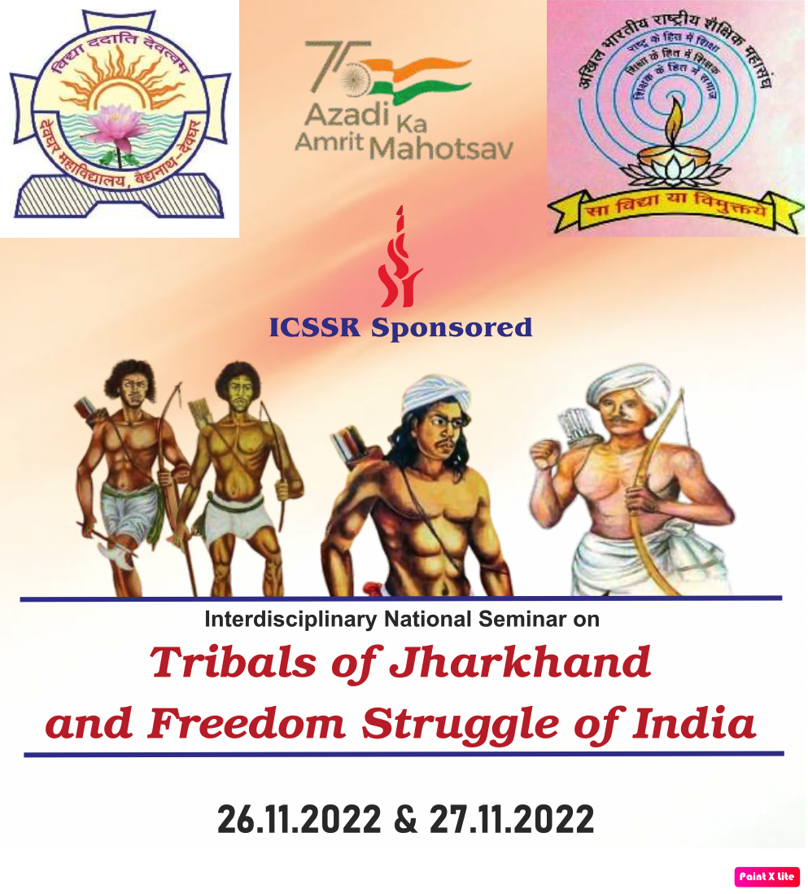

National Seminar 2022
Nov 26 & 27, 2022
Deoghar College Deoghar, Jharkhand
Deoghar College Deoghar, Jharkhand
| Home | About | Registration | Program | Directions | Flyer |
Deoghar College Deoghar in association with knowledge partner ABRSM organizes ICSSR sponsored Interdisciplinary National Seminar on "Tribals of Jharkhand and Freedom Struggle of India" on 26 & 27 November 2022
As the nation celebrates 75 years of India's Independence, Deoghar College Deoghar in association with its knowledge partner Akhil Bhartiya Rashtriya Shaikshik Mahasangh (SKM University, Dumka) join hands to commemorate the glorious history of its people, culture and achievements based on the theme “Azadi ka Amrit Mahotsav”.
The two-day seminar on Tribals of Jharkhand and Freedom Struggle of India contributions of tribals or the indigenous people of Jharkhand to the freedom struggle of India. Their socio- economic backwardness, lack of mainstream political support and orality of cultural tradition prevented them from gaining due recognition. British newspapers and other contemporary writings have linked and restricted their uprisings to merely agrarian movements. The political and religious undertone of their movements were totally dismissed by the colonial regime. Post-colonial Historians paid little attention to their various attempts of organized resistance to the encroachment of the outsiders on the tribal (adivasi) lands. History books are replete with the sagas of those upper-middle class western educated dominant Indians who struggled for India's freedom. But, there were also several class of people comprising of tribals, artisans, craftsmen, workers and others whose contributions to the national movement were either given a marginal space in history or remained unnoticed and unregistered.
In the newly formed state what is now called Jharkhand, there had been many uprisings against the colonial policies and exploitations of moneylenders even before the Revolt of 1857, which the historians consider to be the First War of independence. Various tribal movements in Jharkhand that confounded the British rule manifested the charismatic leadership of Sido Murmu, Kanhu Murmu, Bhagirath Manjhi, Gyan Pargnait, Jatra Oraon, Birsa Munda,Tilka Manjhi and others, but they lay hidden from the world gaze.
Through this seminar we aim to explore the untold stories of the tribal leaders about whom we already know and bring to light various Tribal movements and unsung tribal heroes who sacrificed their lives for the country and without them the commemoration of 75 years of India's independence this year would be incomplete. As most of the Indians are unaware of the contributions of tribals to the freedom struggle of India, it is expedient to record their glorious role and contributions to the gaining of independence that will inspire the present youth and generations.
The tribals of Jharkhand fought against the onslaughts on their society and culture and tried to preserve its purity and sanctity.This aspect of tribal struggle during colonial era isfull of lessons and messages to the present generation as to how a community can protect and preserve its society and culture from alien attacks. We, therefore, intend to provide a common platform to the invited eminent resource persons, erudite scholars and academicians whose participation and deliberations would provide new ground for research and add to the knowledge of Indian History. This would also help to create awareness among the tribals and fill them with a sense of pride for their community's share in the contribution to the nation's struggle for independence.
With the aim to ensure a more careful and honest review of history writing by bringing to light the
known, the lesser known and unsung heroes who shall serve as medium of inspiration and encouragement for the new generation,the seminar invites paper on the following sub-themes:
| 1. Resistance to Resurgence: Tribal Movements in Jharkhand |
| 2. Representation of Tribals in History and its Repercussions |
| 3. Tribal Women and Freedom Struggle of India |
| 4. Lesser Known and Unsung Tribal Heroes of Jharkhand |
| 5. Tribals as the Forerunners of Struggle against Colonialists |
| 6. Tribal Heroes in Folk lore and its Authenticity |
| 7. Retelling of Tribal freedom struggle stories through Literature |
| 8. Print Media and Tribal Challenges to British Regime |
| 9. Unknown and Little Known historical events of Tribal Struggle |
| 10. Historiography of Tribal struggle against Colonialism in India |
| 11. Colonial Perception of Tribal Challenges to Foreign Rule in India |
| 12. Any other topic similar to the theme of the seminar |
|  |
| • Prof. (Dr.) Sonajharia Minz, Vice-Chancellor, S.K.M University, Dumka |
| • Prof. (Dr.) J.P. Singhal, Former Vice Chancellor, Rajasthan University, President, ABRSM |
| • Prof. (Dr.) Bimal Prasad Singh, Pro-Vice-Chancellor, S.K.M University, Dumka |
| • Dr. Basant Kumar Gupta, Principal, Deoghar College, Deoghar |
| • Dr. Anjani Sharma, HOD, Department of English, Deoghar College, Deoghar (Secretary) |
• Dr. Basant Kumar Gupta, Principal, Deoghar College, Deoghar (Chairperson)
• Dr. Anjani Sharma, HOD, Dept. of English, Deoghar College, Deoghar (Secretary)
• Dr. Rajeev Ranjan Sinha, Dept. of Physics, S.K.M. University, Dumka
• Dr. Prasenjeet Mukherjee, HOD, Dept. of Botany, KKM Pakur College, Pakur
• Dr. Ranjit Kumar Singh, Prof. In-charge, Model College, Rajmahal
• Dr. S.N. Singh, HOD, Dept. of Mathematics, Deoghar College, Deoghar
• Dr. Mahesh Kumar Singh, HOD, Dept. of Philosophy, Deoghar College, Deoghar
• Dr. Manish Jha, HOD, Dept. of Political Science, Deoghar College, Deoghar
• Dr. Veena Kumari, HOD, Dept. of Zoology, Deoghar College, Deoghar
• Dr. Kamal Kishor Singh, Dept. of History, Deoghar College, Deoghar
• Dr. Monika Patralekh, Dept. of Botany, Deoghar College, Deoghar
• Dr. C. S. Azad, HOD, Dept. of Chemistry, Deoghar College, Deoghar
• Dr. Rakhi Rani, HOD, Dept. of Hindi, Deoghar College, Deoghar
• Dr. Anju Thakur, Dept. of Sanskrit, Deoghar College, Deoghar
• Dr. Gopal Pal, HOD, Dept. of Bangla, Deoghar College, Deoghar
• Sri. Prithwi Raj Nayak, HOD, Dept. of Physics, Deoghar College, Deoghar
• Dr. Sikandar Kumar Das, Dept. of Political Science, Deoghar College, Deoghar
• Sri. Sanjay Kumar, HOD, Dept. of Economics, Deoghar College, Deoghar
• Mr. Rajesh Kumar, Dept. of Physics, Deoghar College, Deoghar
This seminar is sponsered by ICSSR

|